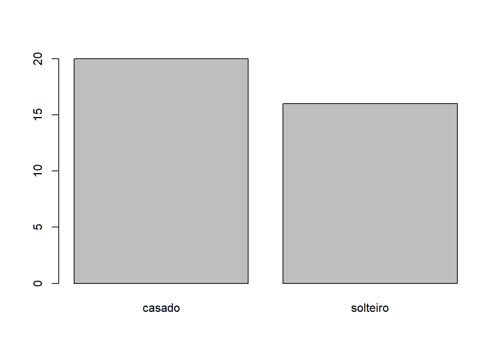
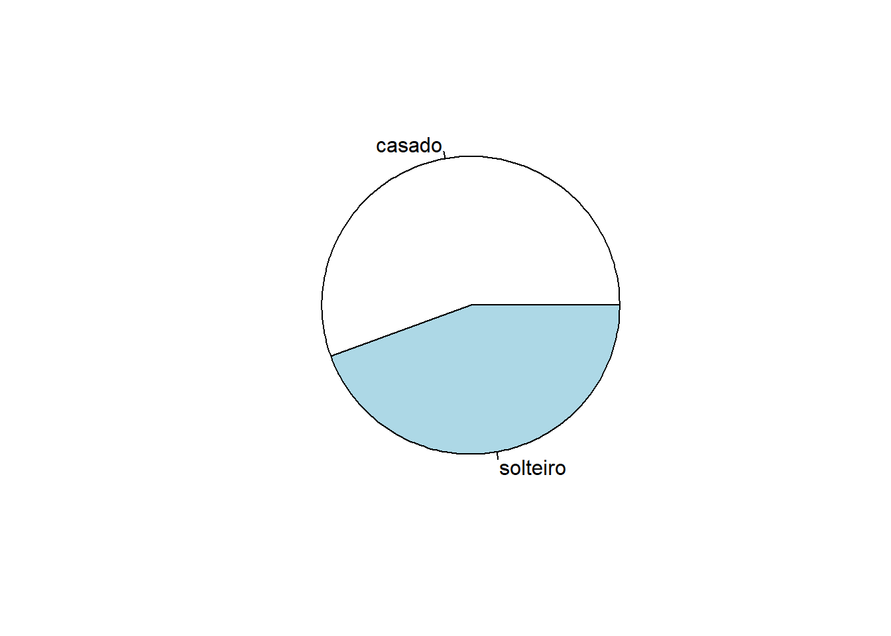
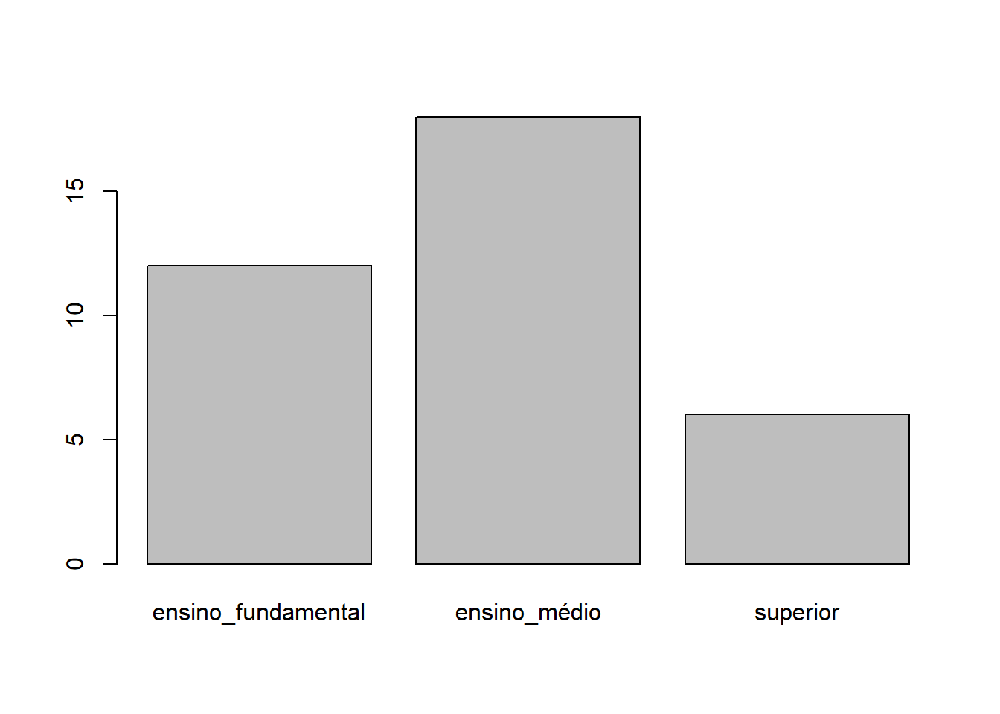
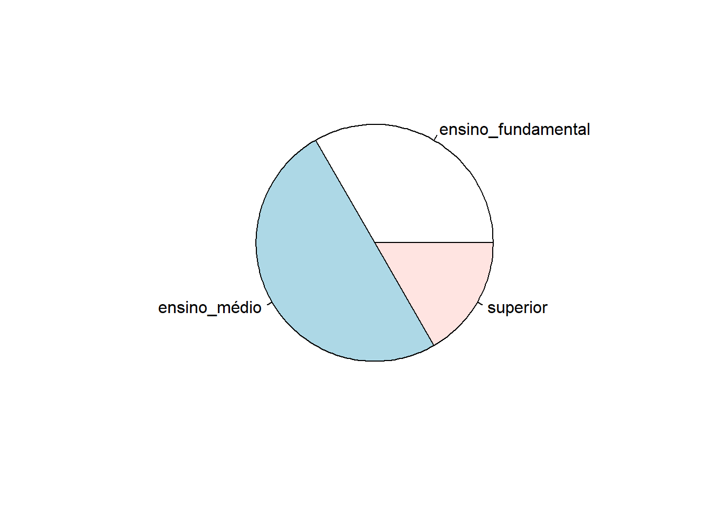
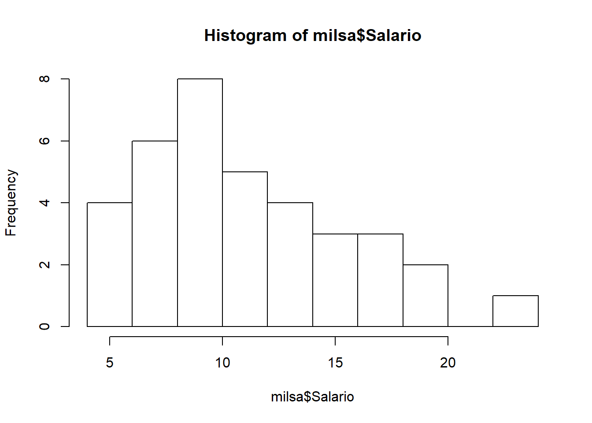
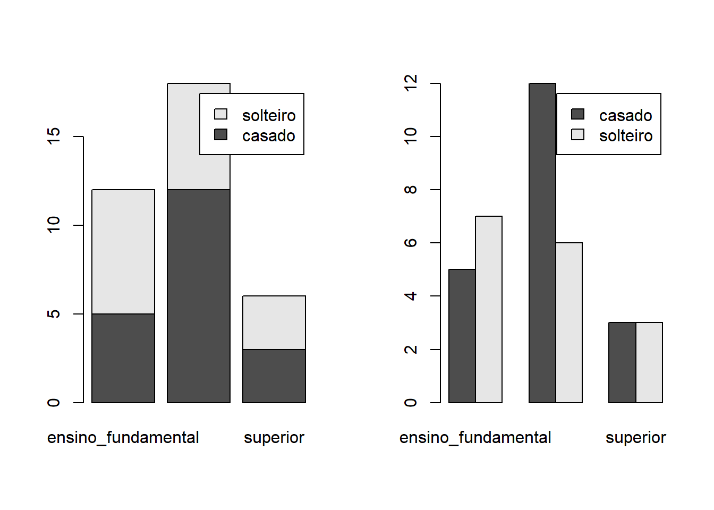
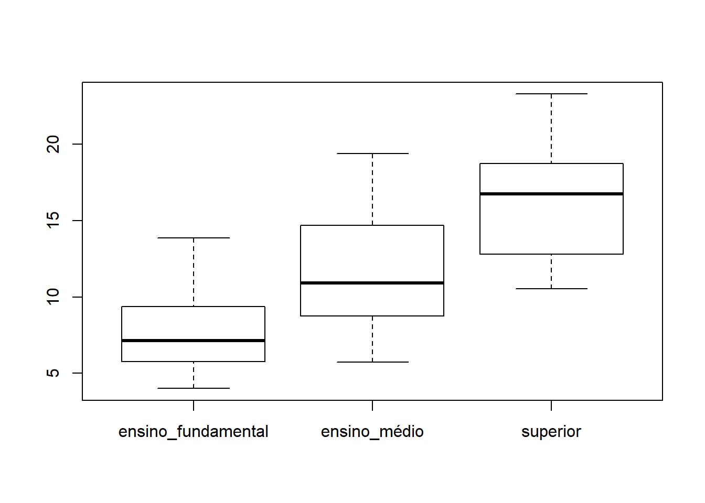
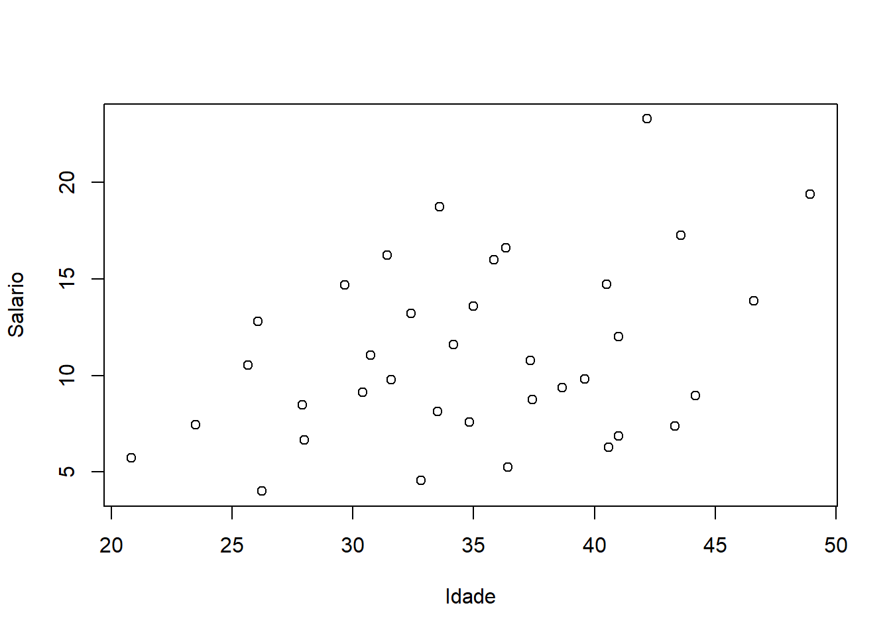

3 Aula 3
3.1 Estatística descritiva
http://leg.ufpr.br/~fernandomayer/aulas/ce083-2016-2/ex01_intro.html# Exercícios do curso de estatistica computacional professor Fernando de Pol Mayer, (LEG: Laboratório de Estatística e Geoinformação).
1 - O livro “Estatística Básica” de W. O. Bussab e P. A. Morettin traz no segundo capítulo um conjunto de dados hipotético de atributos de 36 funcionários da companhia “Milsa”. Este conjunto de dados está disponível em formato CSV. Com isso:
1.1 - Faça a importação destes dados para o R.
# 1. Faça a importação destes dados para o R.
milsa <- read.csv("Milsa.txt", header = T, sep = "", dec = ",")1.2 - Considerando a variável “estado civil” (Est.civil):
1.2.1- Faça tabelas de frequência absoluta e relativa
# 2. Considerando a variável "estado civil" (`Est.civil`):
# a. Faça tabelas de frequência absoluta e relativa
table(milsa$Est.civil)##
## casado solteiro
## 20 16prop.table(table(milsa$Est.civil))##
## casado solteiro
## 0.5555556 0.44444441.2.2- Faça um gráfico de barras e um de setores (“pizza”)
# b. Faça um gráfico de barras e um de setores ("pizza")
barplot(table(milsa$Est.civil))
pie(table(milsa$Est.civil))
1.3- Considerando a variável “grau de instrução” (Inst):
1.3.1 - Faça tabelas de frequência absoluta e relativa
# 3. Considerando a variável "grau de instrução" (`Inst`):
# a. Faça tabelas de frequência absoluta e relativa
table(milsa$Inst)##
## ensino_fundamental ensino_médio superior
## 12 18 6prop.table(table(milsa$Inst))##
## ensino_fundamental ensino_médio superior
## 0.3333333 0.5000000 0.16666671.3.2 - Faça um gráfico de barras e um de setores (“pizza”)
# b. Faça um gráfico de barras e um de setores ("pizza")
barplot(table(milsa$Inst))
pie(table(milsa$Inst))
1.4 - Considerando a variável “número de filhos” (Filhos):
1.4.1 - Faça tabelas de frequência absoluta, relativa e acumulada
# 4. Considerando a variável "número de filhos" (`Filhos`):
# a. Faça tabelas de frequência absoluta, relativa e acumulada
table(milsa$Filhos)prop.table(table(milsa$Filhos))cumsum(table(milsa$Filhos))1.4.2 - Faça um gráfico com as frequências relativas e outro com as frequências relativas acumuladas
# b. Faça um gráfico com as frequências relativas e outro com as
# frequências relativas acumuladas
plot(prop.table(table(milsa$Filhos)))plot(cumsum(prop.table(table(milsa$Filhos))), type = "S",
axes = FALSE)
axis(1, at = 1:5, labels = c(0, 1, 2, 3, 5))
axis(2)
box()1.5 - Considerando a variável “salário” (Salario):
1.5.1 - Verifique os valores máximo e mínimo e qual seria o número adequado de classes para a construção de uma tabela de frequência para resumir esta variável
# 5. Considerando a variável "salário" (`Salario`):
# a. Verifique os valores máximo e mínimo e qual seria o número
# adequado de classes para a construção de uma tabela de
# frequência para resumir esta variável
range(milsa$Salario)## [1] 4.0 23.3nclass.Sturges(milsa$Salario)## [1] 7classes <- cut(milsa$Salario, breaks = nclass.Sturges(milsa$Salario))table(classes)1.5.2 - Faça um histograma
# b. Faça um histograma
hist(milsa$Salario)
1.6 -Considerando as variáveis “estado civil” (Est.civil) e “grau de instrução” (Inst):
1.6.1 - Faça uma tabela de contingência para resumir o cruzamento destas duas variáveis
# 6. Considerando as variáveis "estado civil" (`Est.civil`) e "grau de
# instrução" (`Inst`):
# a. Faça uma tabela de contingência para resumir o cruzamento
# destas duas variáveis
tab <- table(milsa$Est.civil, milsa$Inst)1.6.2 - A partir da tabela de contingância, faça um gráfico de barras (veja como ficam as barras sobrepostas e lado a lado)
# b. A partir da tabela de contingância, faça um gráfico de barras
# (veja como ficam as barras sobrepostas e lado a lado)
par(mfrow = c(1,2))
barplot(tab, legend = TRUE)
barplot(tab, beside = TRUE, legend = TRUE)
par(mfrow = c(1,1))1.7 - Considerando as variáveis “grau de instrução” (Inst) e “salário” (Salario):
1.7.1 - Faça um boxplot para verificar a relação entre estas duas variáveis
# 7. Considerando as variáveis "grau de instrução" (`Inst`) e
# "salário" (`Salario`):
# a. Faça um *boxplot* para verificar a relação entre estas duas
# variáveis
boxplot(Salario ~ Inst, data = milsa)
1.7.2 - Calcule a média e o desvio-padrão dos salários para cada grau de instrução
# b. Calcule a média e o desvio-padrão dos salários para cada grau
# de instrução
with(milsa, tapply(Salario, Inst, mean))## ensino_fundamental ensino_médio superior
## 7.836667 11.528333 16.475000with(milsa, tapply(Salario, Inst, sd))## ensino_fundamental ensino_médio superior
## 2.956464 3.715144 4.5024381.8 - Considerando as variáveis Anos e Meses:
1.8.1 Calcule a idade como Anos+Meses/12 (criando uma nova “coluna” chamada Idade)
# 8. Considerando as variáveis `Anos` e `Meses`:
# a. Calcule a idade como $\text{Anos} + \text{Meses}/12$ (criando
# uma nova "coluna" chamada `Idade`)
milsa$Idade <- milsa$Anos + milsa$Meses/121.9 - Considerando as variáveis Salario e Idade:
1.9.1 - Faça um gráfico para explorar a relação entre estas duas variáveis
# 9. Considerando as variáveis `Salario` e `Idade`:
# a. Faça um gráfico para explorar a relação entre estas duas
# variáveis
plot(Salario ~ Idade, data = milsa) 1.9.2 Calcule a correlação entre estas duas variáveis
# b. Calcule a correlação entre estas duas variáveis
cor(milsa$Idade, milsa$Salario)## [1] 0.36513972 - Experimente as funções mean(), var(), sd(), median(), quantile() nos dados mostrados anteriormente (“milsa”). Veja a documentação das funções e as opções de uso.
# Usando a variável Salario
mean(milsa$Salario)## [1] 11.12222var(milsa$Salario)## [1] 21.04477sd(milsa$Salario)## [1] 4.587458median(milsa$Salario)## [1] 10.165quantile(milsa$Salario)## 0% 25% 50% 75% 100%
## 4.0000 7.5525 10.1650 14.0600 23.30003.2 Seleção Condicional
http://leg.ufpr.br/~fernandomayer/aulas/ce083-2016-2/03_indexacao_e_selecao.html exemplos do curso de estatistica computacional professor Fernando de Pol Mayer, (LEG: Laboratório de Estatística e Geoinformação).
3.2.1 Seleção condicional em vetores
A seleção condicional serve para extrair dados que satisfaçam algum critério, usando expressões condicionais e operadores lógicos.
Considere o seguinte vetor
dados <- c(5, 15, 42, 28, 79, 4, 7, 14)
dados[dados > 15] #Selecione apenas os valores maiores do que 15:## [1] 42 28 79dados[dados > 15 & dados <= 35] #Selecione os valores maiores que 15 E menores ou iguais a 35:## [1] 28Para entender como funciona a seleção condicional, observe apenas o resultado da condição dentro do colchetes:
# Usando & (e)
dados > 15 & dados <= 35## [1] FALSE FALSE FALSE TRUE FALSE FALSE FALSE FALSE# Usando | (ou)
dados > 15 | dados <= 35## [1] TRUE TRUE TRUE TRUE TRUE TRUE TRUE TRUEOs valores selecionados serão aqueles em que a condição for TRUE, nesse caso apenas o quarto elemento do vetor dados.
3.2.2 A função which()
Até agora vimos seleções condicionais que nos retornavam o resultado de uma expressão condicional em vetores. No entanto, muitas vezes estamos interessados em saber a posição do resultado de uma expressão condicional, ao invés do resultado em si.
A fução which() retorna as posições dos elementos que retornarem TRUE em uma expressão condicional.
# Elementos maiores de 15
dados[dados > 15]## [1] 42 28 79which(dados > 15)## [1] 3 4 5# Elementos maiores de 15 e menores ou iguais a 35
dados[dados > 15 & dados <= 35]## [1] 28which(dados > 15 & dados <= 35)## [1] 43.2.3 Seleção condicional em data frames
Considere o seguinte data frame
dados <- data.frame(ano = c(2001, 2002, 2003, 2004, 2005),
captura = c(26, 18, 25, 32, NA),
porto = c("SP", "RS", "SC", "SC", "RN"))Extraia deste objeto apenas a linha correspondente ao ano 2004:
dados[dados$ano == 2004, ]## ano captura porto
## 4 2004 32 SCMostre as linhas apenas do porto “SC”:
dados[dados$porto == "SC", ]## ano captura porto
## 3 2003 25 SC
## 4 2004 32 SCObserve as linhas onde a captura seja maior que 20, selecionando apenas a coluna captura:
dados[dados$captura > 20, "captura"]## [1] 26 25 32 NATambém exclua as linhas com NAs (agora com todas as colunas):
dados[dados$captura > 20 & !is.na(dados$captura), ]## ano captura porto
## 1 2001 26 SP
## 3 2003 25 SC
## 4 2004 32 SCdados[dados$captura > 20 & complete.cases(dados), ]## ano captura porto
## 1 2001 26 SP
## 3 2003 25 SC
## 4 2004 32 SCA condição pode ser feita com diferentes colunas:
dados[dados$captura > 25 & dados$porto == "SP", ]## ano captura porto
## 1 2001 26 SPA função subset() serve para os mesmos propósitos, e facilita todo o processo de seleção condicional:
dados[dados$porto == "SC", ]## ano captura porto
## 3 2003 25 SC
## 4 2004 32 SCsubset(dados, porto == "SC")## ano captura porto
## 3 2003 25 SC
## 4 2004 32 SCdados[dados$captura > 20, ]## ano captura porto
## 1 2001 26 SP
## 3 2003 25 SC
## 4 2004 32 SC
## NA NA NA <NA>subset(dados, captura > 20)## ano captura porto
## 1 2001 26 SP
## 3 2003 25 SC
## 4 2004 32 SCdados[dados$captura > 20 & !is.na(dados$captura), ]## ano captura porto
## 1 2001 26 SP
## 3 2003 25 SC
## 4 2004 32 SCdados[dados$captura > 20, "captura"]## [1] 26 25 32 NAsubset(dados, captura > 20, select = captura)## captura
## 1 26
## 3 25
## 4 323.3 Exercícios
1 - Você contou 42 caranguejos na Joaquina, 34 no Campeche, 59 na Armação, e 18 na Praia Mole. Crie um data frame para armazenar estas informações (número de caranguejos observados e local).
2 - Com o data frame criado no exercício anterior, mostre qual a praia onde foram coletadas menos de 30 caranguejos (usando seleção condicional!).
3- Crie uma nova coluna (região) neste data frame indicando que Joaquina e Praia Mole estão localizadas no leste da ilha (leste), e Campeche e Armação estão no sul (sul).
4- Selecione as praias de região leste que possuem menos de 15 caranguejos contados.
5- Você está interessado em saber em qual das duas praias do sul, o número de caranguejos contados foi maior do que 40. Usando a seleção condicional, mostre essa informação na tela.
6- Qual região possui praias com mais de 40 caranguejos contados?
3.4 Condições no R
Publicado em julho 22, 2015 por Leonardo Filgueira
É muito comum ter que fazer algumas escolhas dada uma condição. Se alguma coisa for verdade, então iremos agir de uma maneira, caso seja mentira, então podemos agir de outra maneira. Assim também funciona o R. Nós podemos estabelecer algumas condições para que seja feita uma ou outra ação. Primeiramente veremos quais são os operadores para fazermos as condições.
Operadores de comparação
Igualdade: == Não igual: != Menor: < Maior: > Menor ou igual: <= Maior ou igual: >= Operadores lógicos
E: && Ou: ||
Usando esses operadores podemos fazer as condições usando a função if (). Podemos usá-la de algumas maneiras, dependendo da necessidade ou do nosso gosto. Quanto à estrutura, usaremos chaves para delimitar o código que estará condicionado pela função if().
Sintaxe:
Se quisermos executar um determinado código apenas se a condição for verdadeira e se a condição for falsa, queremos que nada seja feito, então:
`if (condição) {
Comandos a serem executados caso a condição nos parênteses seja verdadeira}`
Exemplo: Imprima o valor de da variável C, se nela o valor contido for menor que 5.
C=7
if(C>5){ print(C)}## [1] 7Se quisermos executar um determinado conjunto de código quando a condição for verdadeira e outro quando a condição for falsa, então:
`if (condição) {
Comandos a serem executados caso a condição nos parênteses seja verdadeira} else {
Comandos a serem executados caso a condição nos parênteses seja falsa
}`
Exemplo: Imprimir o maior número, entre dois números.
a=4
b=6
if (a>b) {
print(paste("o maior numero é",a))
}else{
print(paste("o maior numero é",b))
}## [1] "o maior numero é 6"Neste exemplo, o R imprimirá o valor da variável a apenas se a for maior que b. Caso contrário, imprimirá o valor da variável b.
OBS.: O comando paste() tem a função de reunir vários elementos e imprimi-los em conjunto. Ele possui, basicamente, a mesma função que o print(). No exemplo usamos os dois, o que pode ser considerado redundante, mas que fique claro que não há problema ou erro nisso.
Outra maneira de usarmos a função neste último caso é escrevermos ifelse ().
Sintaxe:
ifelse (Condição , comando executado caso a condição seja verdadeira , comando executado caso a condição seja falsa)
Exemplo:
a=4
b=6
ifelse (a>b , print (paste("O maior número é:",a)) , print (paste("O maior número é:",b)))## [1] "O maior número é: 6"## [1] "O maior número é: 6"Neste exemplo acontece exatamente a mesma coisa do exemplo anterior. A diferença está apenas na maneira de escrever a função.
Agora que entendemos como funcionam condições no R, vejamos um exemplo um pouco mais complexo:
a=1:10
b=10:20
if ( length (a) == length (b) && a [1]!=0 ) {
c = a*b
} else {
c = 1:100
}Temos aqui dois vetores a e b, com comprimentos diferentes e o primeiro elemento de a é diferente de 0. A condição dada é que o comprimento (length) dos vetores seja igual e o primeiro elemento do vetor a não seja nulo. Como a primeira condição não é verdadeira, a (condição 1 e (&&) condição 2) é falsa, então o vetor c irá receber uma sequência entre 1 e 100.
3.5 Referências
Introdução ao uso do programa R - INPA PPGE - Victor lemes Landeiro
R para cientistas sociais - Jackson Alves de Aquino
Introdução à Linguagem R para Pós-Graduandos em Ecologia e áreas afins - http://ecologia.ib.usp.br/bie5782/doku.php?id=start
Introductory Statistics with R - Peter Dalgaard
R Core Team (2018). R: A language and environment for statistical computing. R Foundation for Statistical Computing, Vienna, Austria. URL https://www.R-project.org/.
Curso de estatistica computacional professor Fernando de Pol Mayer, (LEG: Laboratório de Estatística e Geoinformação).UFPR. http://leg.ufpr.br/~fernandomayer/aulas/ce083-2016-2/ex01_intro.html#, http://leg.ufpr.br/~fernandomayer/aulas/ce083-2016-2/03_indexacao_e_selecao.html